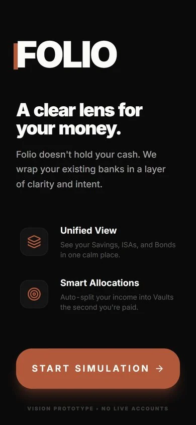
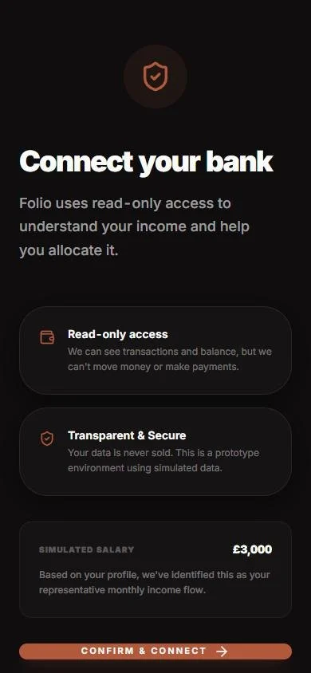
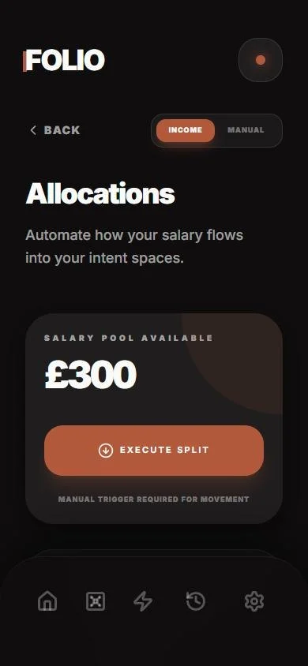
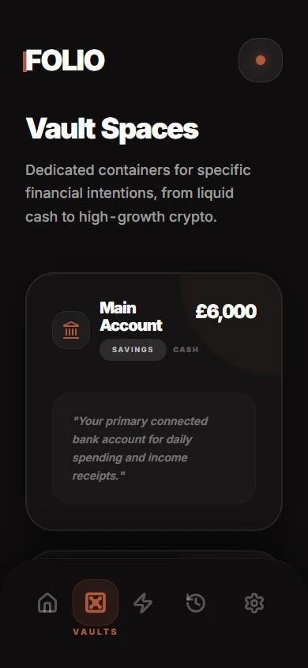
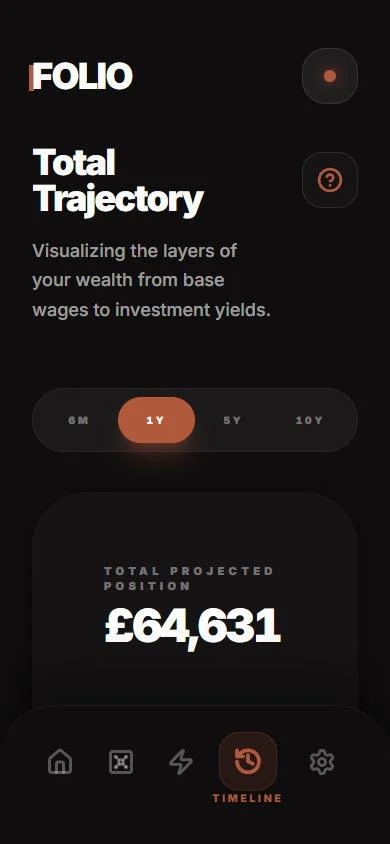
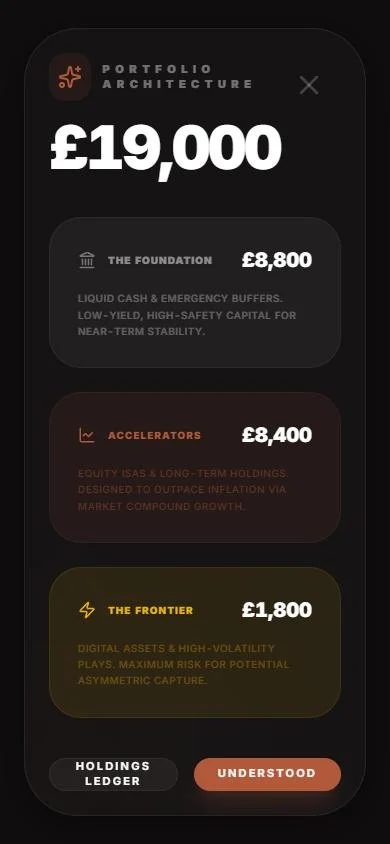
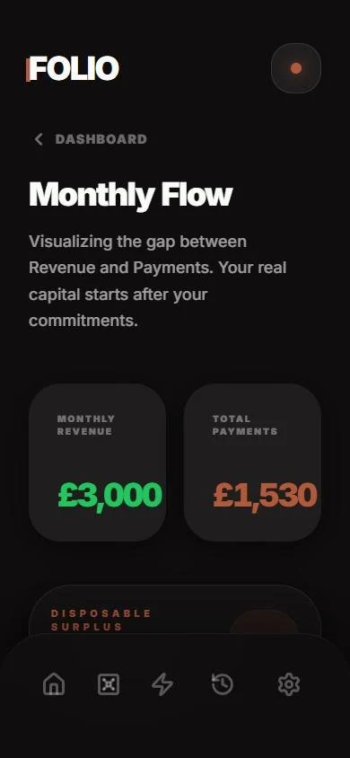
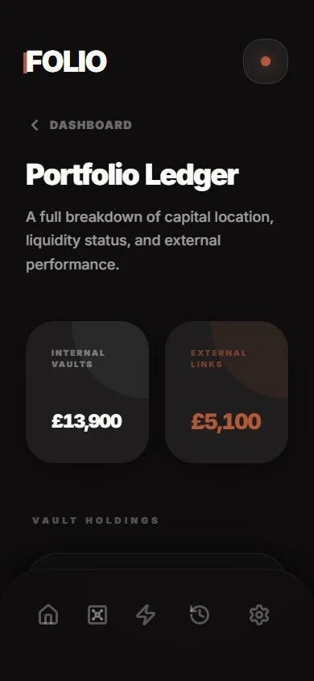

Why I made it
A financial tool for people who are careful with money and ready to start investing.
Folio started as a university brief: design a financial tool for a demographic of your choice. I chose postgraduates. People in that position tend to be careful with money, they're starting to earn properly, and they're thinking about investing for the first time, but their money is already scattered: a current account, an easy-access saver, maybe an ISA, a few Premium Bonds, some crypto in another app.
Each of those has its own app and its own way of talking about money, so nobody gets the full picture, and "am I actually on track?" is surprisingly hard to answer. So the idea became: don't build another bank, build a lens. Folio leaves your money where it is, shows all of it in one place, and automatically puts each payday to work towards your future.
The name
Folio is short for portfolio, because that's exactly what it shows: your entire financial portfolio, in one view.
What it does
Everything you hold across every account, with what's free to use and what's already committed.
A share of each payday is split automatically across your goals, with round-ups.
Containers for cash, ISAs, Premium Bonds and crypto. Not new accounts: a way to give every pound a job.
Describe a goal and get three costed plans, with a monthly amount and where the money should live.
Where today's habits take you, from six months to ten years.
Four steps: your income, what you already hold, your commitments and what you're aiming for.




Live preview
Try it right here.
This is the real prototype, running live with demo data. Start the simulation, then look round your vaults, set up allocations and see where your money's heading. On a computer, scroll inside the phone.
Scope: a goal, broken down
You tell Scope a long-term goal, like saving for a house, and what you earn. It works out how much you need to put away each month, which kind of fund it should go into, and shows you the trajectory of how that money will grow.
You get three approaches side by side, from stability-focused to growth, each with a monthly amount, a finish date and the trade-offs, so you can pick the one that suits how much risk you're comfortable with.
The analysis is written by a small open-source AI model that runs entirely in your browser: no server, no API key, and nothing you type leaves your device. Small models aren't reliable at maths, so every pound and date is calculated in code, and the model only writes the words around them.
“House deposit, £20,000, in 5 years.”
Steady, lower risk
A mix of safety and growth
Higher risk, more potential
Each plan comes with a monthly amount, a finish date and its trade-offs. The stability figure is from the demo's example.

Calm, by design
Lots of money apps lean on hype and nudge you towards risk. Folio goes the other way: no hype, no confetti. The tone stays calm, every pound gets a job, and every goal gets a monthly number. Tap your net value and your money is laid out in three layers, from safest to riskiest, so you can see how it's balanced at a glance.
Cash and emergency buffers. Low-yield, high-safety money for near-term needs.
ISAs and long-term holdings, designed to outpace inflation.
Digital assets and high-volatility plays: more risk, more potential.



The business plan
Alongside the prototype, I wrote a full project initiation document: the case for Folio, the market need, the scope, a MoSCoW priority table, the brand, the team, a 12-week delivery plan, risks, ethics and a budget. It treats Folio as a real product pitched to investors, built as a prototype by a small team on a fixed budget.
The research behind it backed up the idea. People are using more money apps and even AI for their finances than ever, but understanding hasn't kept pace: access has grown faster than understanding. That gap is what Folio is designed to close, by teaching through real money rather than lessons.
The brand
The wordmark is FOLIO in Inter Black, tracked in tight, with a copper bar set behind the stem of the F. The rest of the brand is deliberately quiet: near-black ink, warm paper and one confident copper, so the numbers do the talking. The plan takes it further, onto a premium metal card, a standard debit card and a bus-stop poster.
#0F0D0E
#B3593B
#FBFBFA
#303030
#22C55E
£19,000
Big numbers and headings, tracked in tight.
Portfolio net value
Small capitals, tracked wide, for the quiet labels around every number.
Real and simulated
Folio is a design prototype, not a bank, and it's honest about it. On a phone it runs full screen like a real app; on a computer it sits in a phone frame with shortcuts to jump to any screen.
| Real | Simulated |
|---|---|
| The interface, navigation, motion and every interaction | Bank connections and account balances |
| All the calculations: allocations, monthly targets and projections | Market data, daily changes and prize draws |
| Scope's assistant, running a real open-source model in your browser | External wallets and providers, shown with generic names |
| The design system from the Folio brand guide | Anything you'd need a regulated bank for |